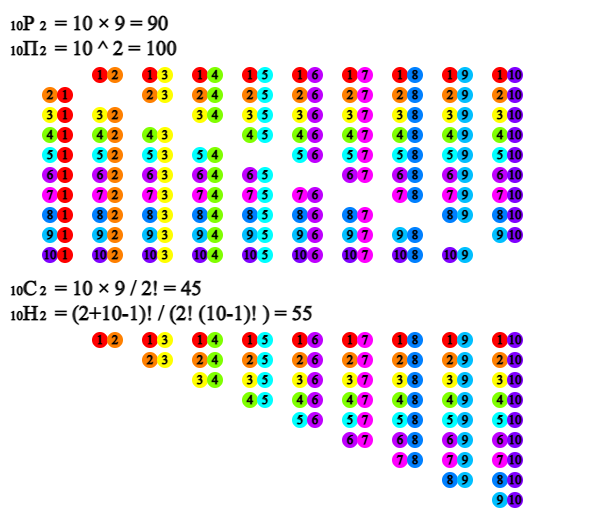

In our daily life, there are many situations in which we need to make
appropriate decisions. In order to make a rational decision, it is necessary
to identify possible cases and analyze various alternatives. Observed data
often have certain types and rules. In this case, permutation and combination
are often used to identify all possible cases.
1.1 Permutation and Combination
⭐ Think
A bicycle club which has 10 members wants to elect officers to operate the club for the next year.
💎 Explore
1) How many cases are there to elect one chairperson and one vice chairperson from 10 members?
2) How many cases are there to elect just two officers?
There are 10 cases in which one chairperson is selected from 10 members.
There are nine cases in which the vice-chairperson is elected after
selecting the chairperson because the person elected as the chairperson
must be excluded. Therefore, the total number of cases in which
one chairperson and one vice-chairperson are selected is 10 × 9 = 90.
This is called the permutation in which two out of 10 members
are selected by considering the order and it is denoted by \({}_{10} P_{2} \).
The upper part of <Figure 1.1> shows all cases of 90.

<Figure 1.1> Permutation and combination which select two out of ten
The selection of two officers can be seen as a case where the positions
of the two elected chairperson and vice-chairperson are not distinguished
in the above cases, so the total number of cases is \(\frac{{}_{10} P_{2}}{2}\) = 45.
This is called the combination in which two out of 10 members are
selected without considering the order and it is denoted by \({}_{10} C_{2}\).
The lower part of <Figure 1.1> shows the number of 45 cases.
The number of cases where all 10 members are listed by considering order
is as follows, and it is denoted as 10! (read as 10 factorial).
10! = 10 × 9 × \(\cdots \) × 2 ×1 = 3628800
In general, the permutation of selecting \(r\) objects out of \(n\) objects
in consideration of the order is calculated as follows:
It is not easy to calculate the permutation and combination manually
or using a calculator, but 『eStatH』 makes it easy to calculate..
🎲 Example 1.1
Using 『eStatH』, let us calculate the permutation and combination to select 2 members out of 10 bike members.
Solution
In 『eStatH』 'Permutation Combination' menu, enter \(n\) = 10 and \(r\) = 2,
then permutation and combination are calculated immediately.
When \(n\) is less than 10 and \(r\) is equal to 2, if you click
[Execute] button, a figure of the number of all cases is displayed
such as in <Figure 1.1>.
[Permutation and Combination]
<Figure 1.2> Calculation of permutation and combination
⏱ Practice 1.1
There are 30 students in a class.
1) How many cases are there to elect 3 delegates?
2) How many cases are there to elect one president, one vice president, and one general secretary?
Let us look at the number of cases in various permutations.
A. Circular Permutation
⭐ Think
Ten cyclists try to eat at a round table.
💎 Explore
The number of cases to list 10 cyclists in a row is 10!.
But what is the number of cases if they are sitting on a round table?
Consider the following 10 cases when we list 10 cyclists in a row.
In the case of sitting around a round table, the above 10 cases are
all the same. As in the case above, there are 10 cases which are the same
if they are sitting around a round table. Therefore, the number of cases
where 10 members are sitting around the round table is as follows:
\(\frac{10!}{10} = 9!\)
A permutation in which different objects are arranged in a circle
in this way is called the circular permutation.
✨ Circular Permutation
A permutation in which \(n\) different objects are arranged in a circle
is called the circular permutation and the number of cases is as follows:
\(\frac{n!}{n} = (n-1)!\)
🎲 Example 1.2
Five persons A, B, C, D, and E stood in a circle holding each other's hands to dance.
1) How many cases can five persons stand in a circle?
2) What is the number of cases where A and B stand next to each other?
Solution
1) The number of cases in which 5 persons stand in a circle is as follows:
(5-1)! = 4! = 24
2) The number of cases in which A and B are considered as one person and stand in a circle are as follows:
(4-1)! = 3! = 6
For each case, the number of cases A and B swap places is 2!. Therefore, the number of cases to be found is as follows:
6 × 2 = 12
⏱ Practice 1.2
I would like to put five dishes, sour pork, beef, dumplings, noodle and fried rice on the revolving table at a Chinese restaurant.
1) How many cases are there to place dishes?
2) How many cases are there to place noodle and fried rice adjacent to each other?
B. Permutation with replacement
⭐ Think
My suitcase is supposed to set a password using three rolls in which each roll has 10 numbers from 0 to 9.
💎 Explore
How many cases of setting a password with three rolls are there?
Since there are 10 numbers in each of the first, second and third rolls, the number of cases in which a password is set using three rolls is as follows:
10 × 10 × 10 = 1000
Note that a roll can have the same number as the other rolls.
A permutation of selecting \(r\) objects by allowing duplicates in
\(n\) different objects is called the permutation with replacement,
and is denoted by \({}_n \pi_{r}\). Since the number of \(n\) objects
can appear repeatedly in the first, second, ... , \(r^{th}\) position, the number of cases is as follows:
\({}_n \pi_{r} = n × n × \cdots × n = n^r \)
✨ Permutation with replacement
A permutation of selecting \(r\) objects by allowing duplicates in \(n\)
different objects is as follows:
\({}_n \pi_{r} = n^r \)
🎲 Example 1.3
There are 5 multiple choice questions in an exam in which a student choose one of the 4 answers (①, ②, ③, ④).
1) How many cases are there that a student writes down the answer?
2) Check the number of cases using 『eStatH』.
Solution
1) Since four numbers can appear the first, second, third, fourth, and fifth answer, the total number of cases is as follows:
4 × 4 × 4 × 4 × 4 = \(4^5\) = 1024
2) In 『eStatH』 'Permutation Combination' menu, select \(n\) = 4 and \(r\) = 5
in the selection window as shown in <Figure 1.3> and click
[Execute] button to calculate the permutation with replacement.
[Permutation and Combination]
<Figure 1.3> Permutation with replacement
⏱ Practice 1.3
A customer of a credit card company must create a six-digit password using the numbers 0 to 9. How many passwords can be created?
C. Permutation with the Same Objects
⭐ Think
You want to arrange three black balls and two red balls in a row.
💎 Explore
Is the total number of cases of arranging five balls 5! = 120?
Let's mark the three black balls as B, B, B and the two red balls as R and R.
If each ball is different, there are 120 different permutations of the balls.
However, since the three black balls and the two red balls are the same,
there are indistinguishable cases among 120 permutations. For example,
if you consider the permutation of a black ball as \(B_1 \), \(B_2 \), \(B_3 \)
and a red ball as \(R_1 \), \(R_2 \) then the following 12 cases are all
the same cases of B, B, B, R, R.
Permutation marked with \(B_1 , B_2 , B_3 \) for black balls \(R_1 , R_2 \) for red balls
Permutation marked with B, B, B for black balls and R, R for red balls
The 12 cases here are multiplication of the permutation of three black balls, 3!,
with the permutation of two red balls, 2!. As above, in 120 cases of 5 balls
permutation, there are 12 identical ones, so the number of permutations arranging
3 black balls and 2 red balls in a row is as follows:
\(\frac{5!}{3! × 2!} = \frac{120}{6×2} = 10\)
In general, the number of permutations with the same objects are as follow.
✨ Permutation with the same objects
The number of cases to arrange \(n\) objects when there are the same
\(p\) objects, \(q\) objects, ... , \(z\) objects is as follows:
2) In the selection window as shown in <Figure 1.4>
from 'Permutation Combination' of 『eStatH』 menu, enter \(n\) = 7, \(p\) = 4,
\(q\) = 3 and click [Execute] button to calculate the permutation.
[Permutation and Combination]
<Figure 1.4> Calculation of permutation with the same objects
⏱ Practice 1.4
Find the number of permutations that can be made using all the letters in the word 'STATISTICS'.
⏱ Practice 1.5
Winner of the Baseball Series in a year is determined by first four wins out of seven games. Find the number of cases in which team A wins at the 7th game among the two teams A and B in the Series. Assume that there is no draw in every game.
D. Combination with replacement
⭐ Think
When I went to travel, there were pretty pencils with three colors, red, green and blue. I want to buy four pencils and give it to 4 friends.
💎 Explore
What is the number of cases to buy four pencils?
In order to choose four from three colored pencils, duplicates must be allowed,
and purchasing four pencils is a combination because the order is not considered.
A combination by allowing duplicates in this way is called the
combination with replacement. The combination with duplicates which
selects \(r\) objects from \(n\) different objects is denoted by \({}_n H_{r}\).
Let the red, green, and blue pencils be R, G and B respectively.
There are 15 cases of purchasing four pencils as shown on the left of
the following table. Inserting a dividing bar ▭ separating R, G and B here is
shown on the right.
Number of cases organized by the number of red pencils
Number of cases in which red, green, blue and dividing bar ▭ are inserted
Four reds R R R R
Three reds R R R G
Three reds R R R B
Two reds R R B B
Two reds R R G B
Two reds R R G G
One red R G G G
One red R G G B
One red R G B B
One red R B B B
No red G G G G
No red G G G B
No red G G B B
No red G B B B
No red B B B B
Four reds R R R R ▭ ▭
Three reds R R R ▭ G ▭
Three reds R R R ▭ ▭ B
Two reds R R ▭ ▭ B B
Two reds R R ▭ G ▭ B
Two reds R R ▭ G G ▭
One red R ▭ G G G ▭
One red R ▭ G G ▭ B
One red R ▭ G ▭ B B
One red R ▭ ▭ B B B
No red ▭ G G G G ▭
No red ▭ G G G ▭ B
No red ▭ G G ▭ B B
No red ▭ G ▭ B B B
No red ▭ ▭ B B B B
Thinking in this way, when there are three different colored pencils,
the number of combinations with duplicates \({}_3 H_{4}\) is the same as the number
of permutations with four same objects (●,●,●,●) and two same objects
(▭, ▭).
\({}_3 H_{4} = \frac{(4+2)!}{4! × 2!} = 15\)
In general, the number of combinations with duplicates \({}_n H_{r}\)
is equal to the number of permutations with arranging \(r\) number of objects ●
and the (\(n-1\)) number of objects ▭ that separates the boundary,
so it is as follows:
2) In 'Permutation Combination' of 『eStatH』 menu,
enter \(n\) = 5, \(r\) = 3 in the selection window as shown in <Figure 1.5>
and click [Execute] button to calculate the number of combinations with
replacement.
[Permutation and Combination]
<Figure 1.5> Calculation of combination with replacement
⏱ Practice 1.6
In how many cases can the three types of sweet candies in a box be distributed to five people with duplicates?
1.2 Binomial Theorem
⭐ Think
Each of the three pockets contains a silver bead and a gold bead.
The letter \(a\) is written on the silver beads and the letter \(b\)
is written on the gold beads.
💎 Explore
1) We try to multiply the written characters by taking one bead from each pocket. What is the total number of cases that appears?
2) Can the number of cases in which a gold bead is drawn twice, \(ab^2\),
be expressed as a combination?
The total number of cases in which a bead is drawn from three pockets and the terms by multiplying the character written on the bead is as follows:
Total number of cases in which a bead is drawn from three pockets and the terms by multiplying the character written on the bead
Organized characters
Number of the same characters
Silver Silver Silver ⇨ \(a × a × a\)
\(a^3\)
\({}_3 C_0 = 1\)
Silver Silver Gold ⇨ \(a × a × a\)
Silver Gold Silver ⇨ \(a × b × a\)
Gold Silver Silver ⇨ \(b × a × a\)
\(a^2 b\)
\({}_3 C_1 = 3\)
Silver Gold Gold ⇨ \(a × b × b\)
Gold Silver Gold ⇨ \(b × a × b\)
Gold Gold Silver ⇨ \(b × b × a\)
\(a b^2\)
\({}_3 C_1 = 3\)
Gold Gold Gold ⇨ \(b × b × b\)
\(b^3\)
\({}_3 C_3 = 1\)
Among these, there are three cases of \(ab^2 \), ({Silver, Gold, Gold},
{Gold, Silver, Gold}, {Gold, Gold, Silver}), which is the number of
combinations of drawing gold beads twice from three pockets \({}_3 C_{2}\) = 3.
Similarly, the number of cases for terms \(a^3\), \(a^2 b\), \(b^3\)
becomes \({}_3 C_{0}\), \({}_3 C_{1}\), \({}_3 C_{3}\).
The above experiment is the same as the term appears when the polynomial
\((a+b)^3\) is developed.
$$
\begin{align}
(a+b)^3 ~&=~(a+b)(a+b)(a+b) \\
~&=~(aa + ab+ba+bb)((a+b) \\
~&=~aaa+aab+aba+abb+baa+bab+bba+bbb \\
~&=~a^3 +3a^2 b+3ab^2 +b^3
\end{align}
$$
If the number of cases in each term is expressed using a combination, it is as follows:
$$
\begin{align}
(a+b)^3 ~=~{}_3 C_{0}a^3 +{}_3 C_{1}a^2 b + {}_3 C_{2}ab^2 + {}_3 C_{3}b^3
\end{align}
$$
In general, the expansion of \((a+b)^3\) is the sum of all the multiplication
terms by taking each \(a\) or \(b\) from one of \(n\) number of \((a+b)\).
Here, the coefficient of \(a^{n-r} b^r\) is equal to the multiplication
of \(a\) from \(n-r\) number of \(a+b\) with \(b\) from \(r\) number of \(a+b\).
The coefficient of \(a^{n-r} b^r\) is \({}_n C_r\). Therefore, the expansion
of \((a+b)^n\) is expressed using the number of combinations is as follows:
$$
\begin{align}
(a+b)^n ~=~{}_n C_{0}a^n +{}_n C_{1}a^{n-1} b + \cdots + {}_n C_{r}a^{n-r}b^r + \cdots + {}_n C_{n}b^n
\end{align}
$$
It is called the binomial theorem, and the coefficient of each term
$$
\begin{align}
{}_n C_{0} , {}_n C_{1} , \cdots , {}_n C_{r} , \cdots . {}_n C_{n}
\end{align}
$$
is called the binomial coefficient. The term \({}_n C_{r}a^{n-r}b^r \)
is called the general term of the binomial theorem.
✨ Binomial Theorem
Suppose \(n\) is a natural number.
$$
\begin{align}
(a+b)^n ~=~{}_n C_{0}a^n +{}_n C_{1}a^{n-1} b + \cdots + {}_n C_{r}a^{n-r}b^r + \cdots + {}_n C_{n}b^n
\end{align}
$$
An arrangement of the binomial coefficients of \((a+b)^n\) when
\(n\) = 1, 2, 3. ... in the form of a triangle as shown in <Figure 1.6>
is called the Pascal's triangle.
The arrangement of each step in the Pascal's triangle is symmetric. This is
because the coefficients of the two terms \(a^{n-r}b^r \) and
\(a^{r}b^{n-r} \) which are \({}_n C_{r}\) and \({}_n C_{n-r}\) have
the same value.
Also, it can be seen that the sum of two neighboring numbers in each step
is equal to the number in the middle of the two numbers in the next step,
because \({}_n C_{r} = {}_{n-1} C_{r-1} + {}_{n-1} C_{r}\).
🎲 Example 1.6
Using 『eStatH』, draw Pascal's triangle for \(n\) = 8 and look at the
binomial theorem.
Solution
In 『eStatH』 'Binomial Theorem – Pascal's Triangle', enter \(n\) = 8 and click [Execute]
to see the result as shown in <Figure 1.6>.